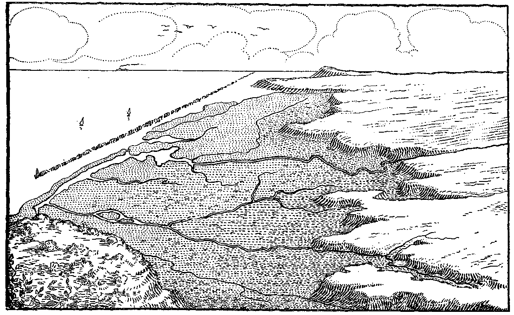

Várzeas do Capibaribe
Várzeas do Capibaribe
Parte 1
Várzeas do Capibaribe
Última edição em 06/12/2020.
🌴🌴🌴
Nesse primeiro capítulo contarei algumas historinhas pré-históricas e pré-invasão que desenham as origens da nossa comunidade recifense. Antes mesmo de qualquer coisa, é importante deixar claro os aspectos da terra quando aqui não morava ninguém. E quando eu falo ninguém, é ninguém mesmo, zero pessoas, ao contrário da tradição que começa a história com um suposto "descobrimento".
Vai peitar a militância do primeiro parágrafo do livro?
O Recife tem um formato de pá: as bordas altas e a frente no nível do chão. Nesse caso, o chão é o mar, as bordas os morros e o cabo... a entrada do rio em algum lugar à oeste. O leitor apressadinho pode ter pensado no Cabo de Santo Agostinho e eu adoraria enfiar uma piada com cabo aqui, mas não deu.
À oeste o rio Capibaribe entra nessa pá e se rama, fazendo curvas, até se estribuchar pelo mar, que é mais forte e segura tudo o que o rio vem arrastando do interior até ele. Mas vamos com calma, há muito o que se discutir aqui. Quero todo mundo sabidinho na geografia física do Recife™.
Há uma definição muito elaborada de Josué de Castro de 1954 e que eu vou traduzir para a linguagem desse livro, com todo o respeito aos amantes da obra de Castro, eu sou mais um.
O Recife de Josué de Castro
Diz que a futura cidade do Recife (do ponto de vista histórico desse livro) se localizaria nas terras baixas de uma planície extensa e chuvosa, que se estende do encontro com o mar, onde se enrruga toda, protegida por um muro de arrecifes de pedra, até uma cadeia irregular de morros que envolve essa planície em um semi-círculo e a separa das terras mais desniveladas do interior. Essa planície abriga ilhas, penínsulas, alagados, mangues e pântanos que são abraçados pelas águas dos rios. Esses rios atravessam os morros sendimentares e se espalham tranquilos pela planície facilmente inundável.
Mais a frente, Josué continua pincelando uma crítica bem pertinente. Ele diz que nesse solo mal consolidado, que não sabe o que é água e o que é terra, cresceu a cidade anfíbia, "como Amsterdã e Veneza, porque assenta as massas de sua construção quase dentro da água". O que é verdade, apesar da limitação da comparação à cidades europeias. "Aparecendo numa perspectiva aérea, com seus diferentes bairros flutuando esquecidos à flor das águas". Onde quer dizer por "aéreo" a estrutura edificante visível a quem olha para as construções: o pilar que sustenta a palafita é visível, diferente da coluna de sustentação de uma casa, que está debaixo dela. Mas trataremos de construção mais tarde.
O litoral pernambucano, costa na qual o Recife está inserido, é uma região monçônica, isto é, possui um sistema definido de chuvas torrenciais anuais. Entre maio e setembro é comum que as chuvas elevem o nível dos rios, expandam os já existentes alagados, façam as marés mais teimosas e permitam que o mangue fique alagado por um pouco mais de tempo.
O afiado leitor, caso resida ou conheça o Recife, pode se questionar o motivo da cidade tanto se alagar durante as chuvas, as barreiras deslizarem com tanta facilidade e a vida sob a chuva se tornar tão difícil, levando consigo algumas vidas a cada inverno. O leitor pode também, sabendo das configurações naturais da localidade, cogitar internalizar que "é assim mesmo" e aceitar que não há outra alternativa senão conviver com a calamidade. Mas não baixe a cabeça. Apesar do terreno apresentar condições tais, tanto a história da cidade quanto os ciclos naturais são conhecidos e as técnicas de engenharia e planejamento urbano já são mais do que suficientes para proporcionar uma vida confortável para todos os moradores dessa "pá" e para os trabalhadores que aqui vivem ou aqui vem trabalhar.